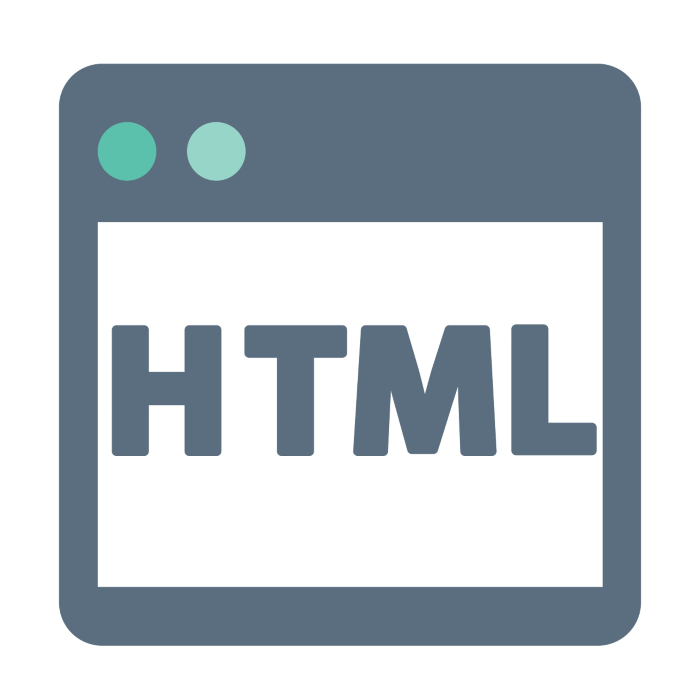
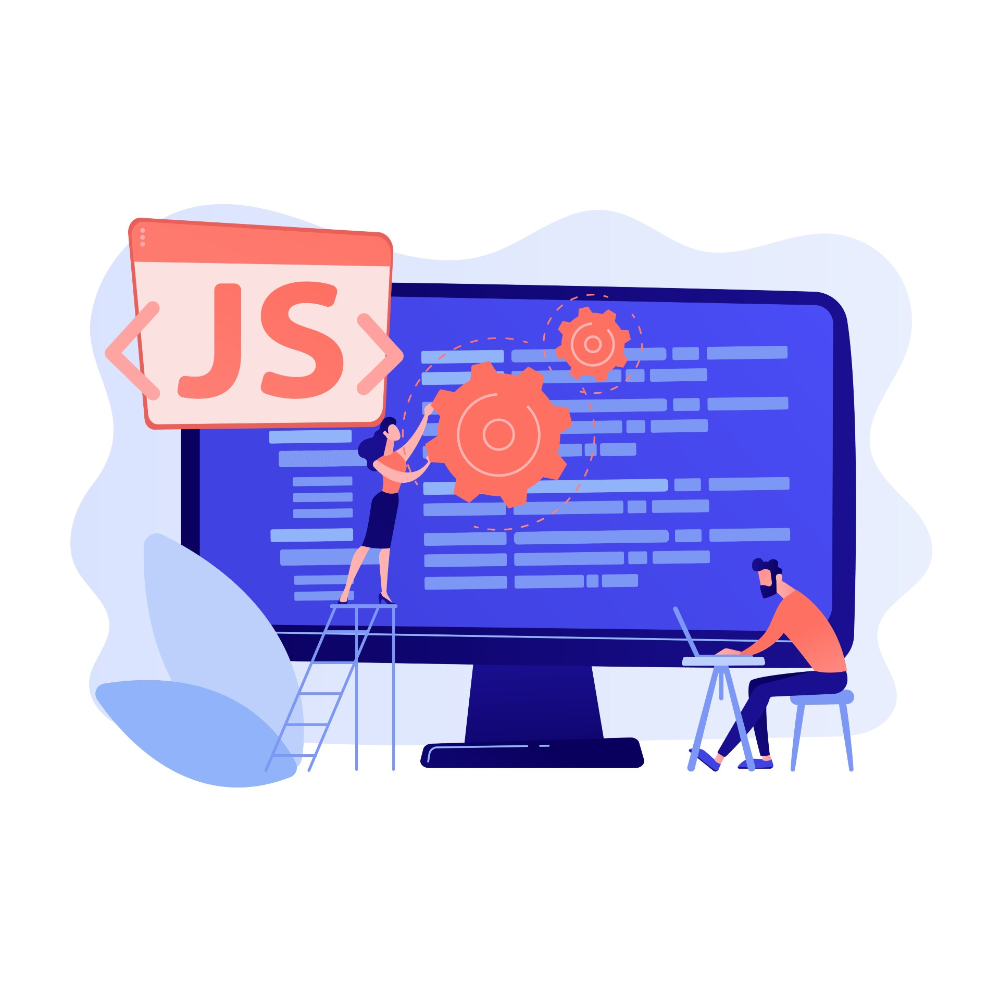
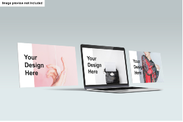

主要工作內容在於：瞭解地主對土地的開發需求及相關的行政流程法規，提出可行的土地變更或規畫方案。
歡迎
我是朱春威，這份簡歷將說明我的個性、專業及經歷。此網頁是RWD（響應式網頁）設計，在依顯示器大小有不同顯示方式，內容也會做更動。
決定當個工程師
從上份工作辭職起，開始挖掘我人生的興趣。三個多月過去，決定要將興趣作為能具有生產價值的事
當網頁工程師的起因是...
一開始只是想做自己的形象網頁，所以嘗試，也從中找到自己的興趣。在不斷試誤、學習及請教中，終於有了一點成果。從無到有的耕耘，那才是自己能體會、瞭解及感到欣喜的過程。所謂滴水能穿石，這也是我從開始學程式最主要的策略及行程，選擇對自己的興趣保持彈性，這樣才跑得久且長。

學習Html
主要架構網頁的語法，當中學到網頁的架構組成，網頁的標題及內文、圖片、影片及音源的插入等等。一開始主要使用的框架是Visual Studio，到後來使用GitHub上架網站。

學習Css
這部分是我學習靜態網站過程中花最長的時間，Css是Html的美化及延伸，主要是網頁的美工，諸多例如排版、字型及響應式網頁的原理及廣泛地仰賴Css程式的架構。

學習JavaScript
JavaScript為製作動態網頁（互動式網頁）的根基，包含觸發JS公式，本網頁的按鍵為互動式網頁一環。

學習Html
主要架構網頁的語法，當中學到網頁的架構組成，網頁的標題及內文、圖片、影片及音源的插入等等。一開始主要使用的框架是Visual Studio，到後來使用GitHub上架網站。

學習Css
這部分是我學習靜態網站過程中花最長的時間，Css是Html的美化及延伸，主要是網頁的美工，諸多例如排版、字型及響應式網頁的原理及廣泛地仰賴Css程式的架構。

學習JavaScript
JavaScript為製作動態網頁（互動式網頁）的根基，雖說目前我能寫出靜態網頁，但互動式網頁才是我對網頁前端工程師最主要的定位，亦是我目前正在努力的方向
專長
個性 |
技能 |
|
◇應用程式
|
個性
- 好學習、喜歡挑戰
- 喜歡生活規律
- 人好相處、安守本分
技能
◇應用程式
- 前端網頁程式語言：Html、Css、JavaScript，現在的網頁就是使用這些程式語言寫出來的，並架設在GitHub上。
- 辦公室應用類：Word、PowerPoint、Excel
- 統計開放軟體：SAS
- 製圖軟體：AutoCad
- 地理資訊軟體：GIS
◇軟性技能
- 文章寫作及綱要梳理
- 團隊溝通
未來規劃目標
由於剛踏入程式設計師的領域，因此對自己實際適合的程式語言以及其應用方式並不熟悉。可以確定的是，目前為了能製作出動態網頁而繼續努力。但為了更瞭解自己適合的領域，後續還規劃應學習的程式語言，以及我認為能適合的應用範圍。
目前學習進度條（點擊顯示）
HTML 已完成內容：
Element 網頁的元素，也稱tagStructure 網頁的結構
Document Standards 網頁聲明
Tables 網頁表格
Forms 網頁元素中的形式設定
Semantic HTML 網頁的語意

CSS 已完成內容：
Selectors and Visual Rules 選擇器及撰寫規則
Box Model 盒子模型
Display and Positioning 顯示及定位
Colors 顏色設定
Typography 文字排版
Flex 板模排版
Grid 格線排版
Transition 版面變化
JavaScript 已完成內容：
Conditionals 條件表達
Function 公式寫法
Scope 變量範圍
Arrays 數列寫法
Loops 循環列
Iterators 高階函數
Objaects 物件寫法
Classes 分類
Modules 模組
Async-Await 異步處理
Requests HTTP請求回應
MySQL 未來進行內容：
Queries
Aggregate Function 函數公式
Multiple Tables 多重表格
Python 未來進行內容：
Function 公式使用
Control-flow 控制流程
List資料結構處理程序
Loops 迴圈程式
Strings 字串物件
Modules 模組創建
Dictionaries 未指定變數組創建
Files 檔案格式轉換
Classes 各類資料轉換
其他
學習其他需要由前端轉至後端的程式語言，例如PHP。未來也會持續學習C#等程式，及手機APP程式所需的語言，如Ruby、Kotlin或Swift。
關於我
自傳
雖然敝人專精於土地規畫之專業，但於29歲時發現自己對程式語言有興趣及喜好，開始學了C##語言寫出點餐介面程式，中途受朋友無私的教導，也成功寫出一個簡單介面的執行程式。但由於當時僅歸類在興趣而非人生必須之專業中，便未放在心上。後來全身投入於土地規畫之工作上，本也應順遂樂於工作中，受主管青睞及栽培，然不幸地因家人生病需照顧，亦難有心思分析及撰寫報告書，故告知原主管並交接辭退工作。照顧家人期間，本人認真思索原工作能否為未來持續性的工作，並同時不間斷地花每日1~2小時學習html、css及JS，於二個月後終於能設計出一份響應式靜態網頁(附於作品集)。基於原本既有的興趣及不斷深造學習的成果下，轉行做工程師的念頭便開始出現。
這二個月來主要學習到的內容包含：網頁從無到有的設計、響應式網頁的設計、網頁的發佈、及一些設計應注意的細節。對我來說網頁設計最有趣及困難的點在於：顏色應用、圖片設計及排版的整齊度。
我本人也明白程式語言非一蹴可幾，其中還有幾個方向需要學習，對自己未來還想學python、php、MySQL、C##等等的語言，滿足成就自我之方向外，也讓未來的我有更多的能力熟於創造出對大家都有幫助的產品
工作經歷
工作資歷5～6年
- 土地開發人員
- 成功大學研究助理
- 成功大學行政助理
當時主要調查大學生選擇交通運具的因素及如何影響其決定，需要進行研究方法架構、資料分析及發表研究等等項目。
處理研究本身衍伸的人力及行政處理，例如招聘調查人員、進行資料處理及研究開銷報帳等等
學歷
國立成功大學 | 都市計劃系 | 2018畢業
國立成功大學 | 都市計劃學系 | 2011畢業
聯絡我
position01p@gmail.com
0906-129-775